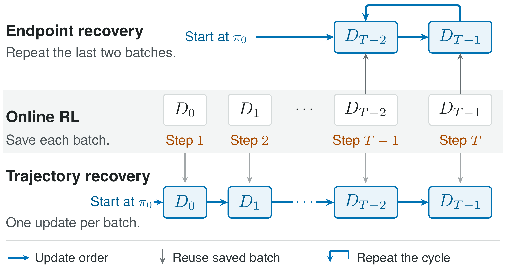
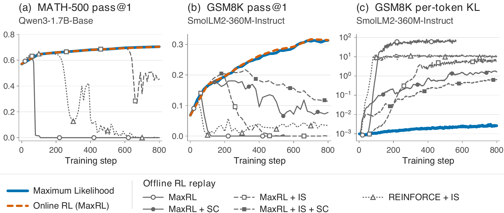
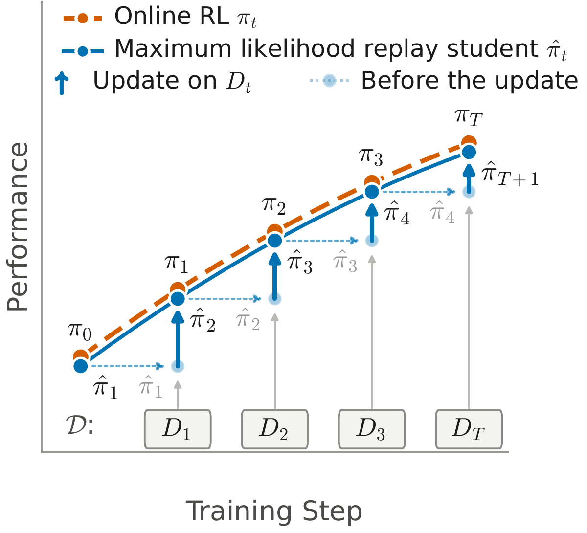
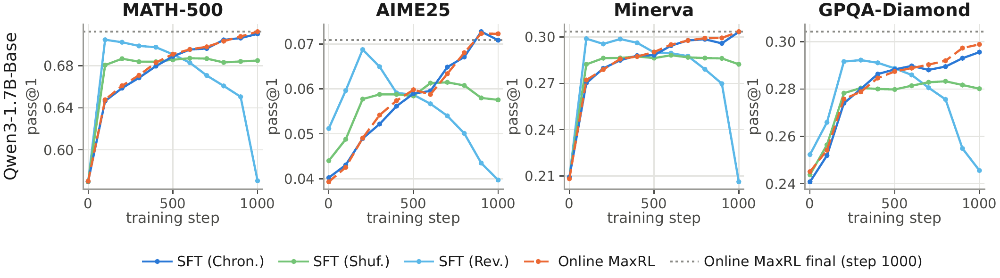
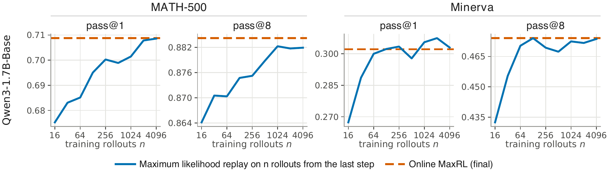
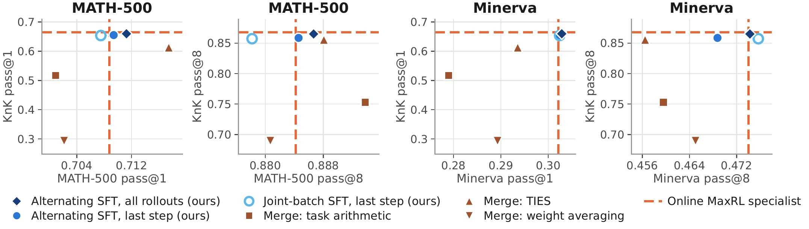
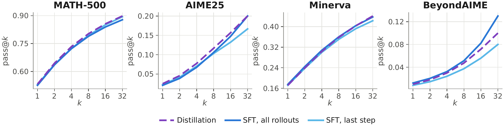

Two replay protocols for a $T$-step rollout archive. Both students start from $\pi_0$ and fit the saved responses by maximum likelihood without rewards. In this example, endpoint replay cycles over the final two batches to recover the performance of $\pi_T$. Trajectory replay takes one update per batch in chronological order.
Broadly speaking, reinforcement learning (RL) post-training converts compute into model capabilities by training on model-generated data. Typically, the rollouts are discarded after each update, and the knowledge acquired during RL resides in the model weights. In this work, we investigate how much of this knowledge is retained in the rollouts themselves. A natural first attempt is to replay the original RL algorithm on archived (rather than freshly generated) rollouts, but this generally leads to catastrophic collapse. We provide a simple explanation for this phenomenon, which in turn suggests a remedy we call maximum likelihood replay: fitting the model to its archived rollouts. Surprisingly, starting from the same base model and replaying the rollouts in the order in which they were generated, without any distinction between correct and incorrect responses, is sufficient to recover the performance of online RL. In fact, a single maximum likelihood update per rollout batch closely tracks the entire learning curve of online RL. Furthermore, maximum likelihood replay on the rollouts of the last few RL steps often suffices to recover the final model's performance. This suggests that much of the compute invested in RL goes into discovering an improved sampling distribution rather than learning it from samples.

Maximum likelihood replay tracks online MaxRL as offline RL replay drifts. Panels (a) and (b) show pass@1 on MATH-500 and GSM8K. Panel (c) shows the per-token $\mathrm{KL}(\pi_t\,\|\,\hat\pi_t)$ from the rollout-generating policy to each replayed policy on GSM8K, on a logarithmic scale. On MATH-500, we evaluate maximum likelihood replay and online MaxRL every 100 steps and offline RL replay every 10 steps. IS denotes truncated token-level importance sampling. Filled markers indicate score centering (SC).
At step $t$, the current policy $\pi_t$ receives a batch of prompts drawn from a distribution $\rho$ and samples several responses to each prompt. We denote the prompts and responses by $D_t$. A verifier assigns each response $y$ to prompt $x$ a binary reward $r(x,y)\in\{0,1\}$, and the online algorithm uses these rewards to update $\pi_t$ to $\pi_{t+1}$. We save the batches in order, giving the archive $\mathcal{D}=(D_0,\ldots,D_{T-1})$ for a run of $T$ steps. The last batch thus comes from $\pi_{T-1}$, just before the final update. Maximum likelihood replay uses only the prompts and responses.
Fix a prompt $x$ and let $p_t(x)$ be the probability of a correct response under $\pi_t$. At the population level, the online algorithms use $p_t(x)$ as their reward baseline. With prompt weight $w_t(x)$, the contribution from $x$ to the update is
$g_t(x)=w_t(x)\,\mathbb{E}_{y\sim\pi_t(\cdot\mid x)}\big[(r(x,y)-p_t(x))\,\nabla\log\pi_t(y\mid x)\big]$
Since the on-policy score has mean zero, the baseline term vanishes in expectation. Different choices of $w_t(x)$ lead to different algorithms.
| Algorithm | Prompt weight $w_t(x)$ |
|---|---|
| REINFORCE, RLOO | $1$ |
| GRPO | $1/\sqrt{p_t(x)(1-p_t(x))}$ |
| MaxRL | $1/p_t(x)$ |
Given the rollouts generated during an online RL run, we investigate to what extent we can recover the performance of the original model. The same archive can serve two goals.
Reproduce the model's performance throughout training.
Recover only the final performance.
We begin by investigating whether replaying the original RL updates can recover the training trajectory. We then develop maximum likelihood replay, study the role of the order in which the rollouts are presented, and finally investigate how much of the training history is actually needed to recover the final model's performance.
A natural first attempt to recover an online RL run is to replay the original RL updates on the archived rollouts. Starting from the same base model, $\hat\pi_0=\pi_0$, we process the batches in their original order, using the same update rule, rewards, and hyperparameters as the RL run which generated them. With deterministic updates, replay would reproduce the online trajectory exactly. How closely does replay follow the original learning curve when numerical discrepancies and stochastic variation perturb the updates?
A population-level explanation. For a fixed prompt $x$, offline replay uses responses sampled from $\pi_t$ and evaluates their scores at the replayed policy $\hat\pi_t$.
$g_t^{\mathrm{replay}}(x)=w_t(x)\,\mathbb{E}_{y\sim\pi_t(\cdot\mid x)}\big[(r(x,y)-p_t(x))\,\nabla\log\hat\pi_t(y\mid x)\big]$
When $\hat\pi_t=\pi_t$, this is the online update. Small numerical discrepancies during training are one possible source of drift. Once the policies differ, the score of $\hat\pi_t$ can have nonzero mean under $\pi_t$, so the baseline can contribute to the expected gradient. For a prompt with $p_t(x)>0$, let $\pi_t^+(y\mid x)=\pi_t(y\mid x)\,r(x,y)/p_t(x)$ denote the distribution of responses conditioned on success. If we hold the rollout-generating policy fixed at step $t$, $g_t^{\mathrm{replay}}(x)$ gives the gradient for ascent on
$$w_t(x)\,p_t(x)\Big[\underbrace{-\mathrm{KL}\big(\pi_t^+(\cdot\mid x)\,\|\,\hat\pi_t(\cdot\mid x)\big)}_{\text{pull toward successful responses}}\;\underbrace{+\,\mathrm{KL}\big(\pi_t(\cdot\mid x)\,\|\,\hat\pi_t(\cdot\mid x)\big)}_{\text{baseline push away from the rollout policy}}\Big]$$
$-\mathrm{KL}(\pi_t^+\,\|\,\hat\pi_t)$
Encourages the replayed policy to match the distribution of successful responses.
$+\mathrm{KL}(\pi_t\,\|\,\hat\pi_t)$
Comes from the baseline. Its gradient vanishes on-policy.
Once the policies differ, the baseline term can amplify small discrepancies over successive updates.
We replay the rollouts of an online MaxRL run of Qwen3-1.7B-Base on Polaris-53K and evaluate the replayed policy on MATH-500 (panel (a) of the figure below). With uncorrected MaxRL replay, pass@1 initially improves, then falls to nearly zero by step 100. With truncated token-level importance sampling, replay tracks online RL until roughly step 600, then drops sharply and only partially recovers.
We repeat the experiment with SmolLM2-360M-Instruct on GSM8K and track pass@1 alongside the per-token divergence $\mathrm{KL}(\pi_t\,\|\,\hat\pi_t)$ (panels (b) and (c)). With uncorrected MaxRL replay, the divergence grows by several orders of magnitude as performance collapses. Score centering reduces drift, but even with importance sampling the replayed policy eventually falls behind online RL.
Maximum likelihood replay tracks online MaxRL as offline RL replay drifts. Panels (a) and (b) show pass@1 on MATH-500 and GSM8K. Panel (c) shows the per-token $\mathrm{KL}(\pi_t\,\|\,\hat\pi_t)$ from the rollout-generating policy to each replayed policy on GSM8K, on a logarithmic scale. On MATH-500, we evaluate maximum likelihood replay and online MaxRL every 100 steps and offline RL replay every 10 steps. IS denotes truncated token-level importance sampling. Filled markers indicate score centering (SC).
Can we recover the online trajectory by fitting each rollout-generating policy directly to its samples? In maximum likelihood replay, we maximize the log-likelihood over all archived responses, whether correct or incorrect.
A population-level perspective. At step $t$, the online policy $\pi_t$ generates responses to prompts drawn from $\rho$. The population loss for a candidate policy $q$ is
$\mathcal L_t(q) = -\mathbb{E}_{x\sim\rho,\,y\sim\pi_t(\cdot\mid x)}\big[\log q(y\mid x)\big] = \mathbb{E}_{x\sim\rho}\big[\mathrm{KL}\big(\pi_t(\cdot\mid x)\,\|\,q(\cdot\mid x)\big)\big] + \mathrm{Const.}$
For each prompt, maximum likelihood minimizes the same KL divergence that the baseline term of offline RL replay encourages to increase.
If the student can represent $\pi_t$, an exact population fit gives $\hat\pi_{t+1}=\pi_t$ on prompts drawn from $\rho$, placing the student one step behind the online run. At initialization, for example, the population likelihood gradient is zero because the student already matches $\pi_0$. The first RL improvement becomes visible to the student in the next batch, sampled from $\pi_1$. Can a single likelihood update on each finite batch keep pace as the online policy improves?

Maximum likelihood replay mechanism. The online policy $\pi_t$ (dashed vermilion) generates batch $D_t$. The student (solid blue) takes one update on $D_t$ to fit $\pi_t$, yielding $\hat\pi_{t+1}$.
Starting from the same base model, we take one maximum likelihood update on each archived batch in chronological order. On MATH-500, the student's pass@1 tracks online MaxRL throughout training. On GSM8K, the student's per-token KL divergence from the rollout-generating policy stays small throughout training (figure in the previous section).
Over 1,000 steps of MaxRL on Qwen3-1.7B-Base, the student closely tracks online pass@1 and pass@16 on MATH-500, AIME25, GPQA-Diamond, and Knights and Knaves. On Knights and Knaves, the student follows online MaxRL from near-zero accuracy through the steep rise in performance. Across the four benchmarks, the mean absolute gap in pass@$k$, averaged over evaluation checkpoints and values of $k$, ranges from 0.2 to 1.1 percentage points. The student tracks these gains using only the archived responses, with one update per batch and no reward labels.

Chronological maximum likelihood replay follows the learning curve of online MaxRL. Pass@1 and pass@16 over training of Qwen3-1.7B-Base, for replay in the original batch order (solid blue) and for online MaxRL (dashed vermilion). The $y$-axes are broken where the two metrics are far apart.
At the final checkpoint, chronological replay also closely matches online MaxRL across the evaluated values of pass@$k$. This holds for Qwen3-1.7B-Base on all four benchmarks and for Qwen3-4B-Base on MATH-500, AIME25, and GPQA-Diamond. The result generalizes. For both GRPO and RLOO, chronological maximum likelihood replay of the full rollout archive recovers the corresponding online run's final pass@$k$ on AIME 2024–2026 and MATH-500 with Qwen3-1.7B-Base.

Chronological maximum likelihood replay recovers the final checkpoint of online MaxRL. Final-checkpoint pass@$k$ for maximum likelihood replay in chronological order (solid blue) and online MaxRL (dashed vermilion). Open circles identify Qwen3-4B-Base. Unmarked curves show Qwen3-1.7B-Base.
Takeaway 1 (Trajectory Recovery): The learning trajectory of online RL can be recovered from its own rollouts through maximum likelihood, without access to rewards or intermediate model checkpoints.
Does maximum likelihood replay recover the online learning curve if the batch order changes? We present the same archive in chronological, reverse, and randomly shuffled order.
A population-level perspective. Let $\sigma$ be a permutation of the $T$ archived batches, so the student sees $D_{\sigma(s)}$ at replay step $s$. Under the exact population fit, the student recovers the policy that generated that batch.
$\hat{\pi}_{s+1}=\pi_{\sigma(s)},\qquad s=0,\ldots,T-1$
Chronological replay therefore ends at $\pi_{T-1}$, the policy that generated the last online batch. Reverse replay ends at $\pi_0$, the policy that generated the first. Under a uniformly random ordering, the last batch is equally likely to come from any step of the online run. How much does order matter when the student takes just one gradient update on each finite batch?
We replay the rollouts of an online MaxRL run of Qwen3-1.7B-Base on Polaris-53K. All three students start from the same base model, see every rollout once, and differ only in the order of the batches. On MATH-500, reverse replay raises pass@1 from about 57% to 70% in the first 100 updates, close to the final performance of online MaxRL. As the student encounters progressively earlier batches, pass@1 falls back to about 57%. Chronological replay tracks online MaxRL, while shuffled replay levels off below it.

The same rollouts produce different learning curves when replayed in different orders. Each maximum likelihood replay run starts from Qwen3-1.7B-Base and sees every batch from the Polaris-53K MaxRL run once. On the blue replay curves, triangles point right for chronological order and left for reverse order. Diamonds mark shuffled replay. The dashed vermilion curve shows online MaxRL, and the dotted gray line marks its final pass@1. On AIME25 and GPQA-Diamond, step zero shows each run's unsmoothed score. Later points use a centered moving average over up to three evaluations.
On each benchmark, the endpoint error is the absolute gap in pass@$k$ between the model under evaluation and the final online MaxRL checkpoint, averaged over $k\in\{1,2,4,8,16,32\}$. Across all four benchmarks, chronological replay has the smallest error, shuffled replay is intermediate, and reverse replay has the largest. On MATH-500 and AIME25, reverse replay ends slightly farther from online MaxRL than the base model does.

Chronological replay has the lowest endpoint error on all four benchmarks. Bar height gives the endpoint error after 1,000 replay updates. Right-pointing triangles mark chronological replay, diamonds mark shuffled replay, and left-pointing triangles mark reverse replay. Each dotted gray line marks the base model's endpoint error on that benchmark before replay.
Even after the student has seen every rollout, its final performance depends on the order in which it saw them. In reverse replay, the student approaches the final MATH-500 score while it is still training on late-stage rollouts.
If final performance is the goal, how much of the earlier training history do we need? The previous results suggest that the performance of the replayed model is largely determined by the distribution of the rollouts it is currently learning from. If we are only interested in recovering the final performance of online RL, perhaps we do not need to replay its entire training history.
A population-level perspective. Maximum likelihood on samples generated by $\pi_t$ recovers $\pi_t$ at the population optimum. Thus, in principle, access to the last rollout-generating distribution $\pi_{T-1}$ makes the entire preceding training history unnecessary. In practice, we only have a finite number of samples from this distribution. To increase the amount of available data, we can use the rollouts generated during the last $m$ RL steps. Assigning equal weight to these steps, the unrestricted minimizer of the population objective is the mixture
$\displaystyle q^\star(\cdot\mid x) = \frac{1}{m}\sum_{t=T-m}^{T-1}\pi_t(\cdot\mid x)$
Provided that the policy changes sufficiently little toward the end of training, this mixture is close to the final RL policy. This raises an empirical question. How many of the rollouts generated during RL are actually needed to recover its final performance?
Starting from the same base model, we perform repeated maximum likelihood updates on the rollouts generated during the last $m$ RL steps. Remarkably, for Qwen3-1.7B-Base, the rollouts of a single RL step are sufficient to closely recover the performance acquired over a thousand RL steps, across mathematical reasoning and Knights and Knaves. Recovering the final performance thus requires only 0.1% of the distinct rollouts generated during online RL in these settings. On Knights and Knaves, the final pass@$k$ gap from online MaxRL, averaged over $k$, is 71.9 percentage points for the base model, 0.9 points after replay on the final batch alone, and 0.3 points after replay on the full archive.
A single batch is not sufficient in every setting. For SmolLM2-360M-Instruct on GSM8K, increasing the number of archived batches progressively closes the gap with online RL, with the last 50 batches recovering most of its performance.

Replaying the final batch nearly recovers online MaxRL performance on all three Qwen benchmarks. Repeated maximum likelihood updates from the base model on the last of 1,000 batches yield an endpoint error below one percentage point on each benchmark. On GSM8K, SmolLM2's endpoint error falls from 5.2 to 3.0 to 0.9 percentage points using the last 1, 5, and 50 batches, respectively.
We further investigate how many rollouts from the last RL step are actually needed. On some benchmarks, even a small subset of these rollouts suffices to closely recover the final performance.

Minerva approaches full-batch replay with fewer rollouts than MATH-500. Each pair shows pass@1 and pass@8 after 100 maximum likelihood replay updates from Qwen3-1.7B-Base on $n$ randomly selected rollouts from the final Polaris-53K batch of 4,096 (solid blue). Dashed vermilion lines show final online MaxRL performance.
These findings suggest that much of the computational effort in RL goes into discovering an improved sampling distribution rather than learning it from samples. Once samples from this distribution are available, the capabilities acquired through RL can often be recovered through maximum likelihood replay on a remarkably small fraction of the original training data.
Takeaway 2 (Endpoint Recovery): Discovering an improved sampling distribution through RL can require substantially more data than learning from it. The rollouts of a few late-stage RL steps suffice to recover the performance acquired over a thousand steps.
Much of what a model learns during RL can be recovered from the rollouts it generates. This opens up possibilities for reusing the compute invested in RL beyond recovering the original model. We investigate whether the capabilities of independently trained models can be combined and whether the capabilities acquired by one model can be transferred to another, using only their archived rollouts.
A common approach to combining the capabilities of independently trained models is to merge their weights. Since the capabilities acquired during RL are also reflected in the rollouts, an alternative is to combine the models in data space. For $M$ specialists trained from the same base model on different prompt distributions $\rho_1,\ldots,\rho_M$, maximum likelihood on the pooled rollouts at step $t$ solves
$\displaystyle \min_q \sum_{k=1}^{M} w_k\,\mathbb{E}_{x\sim\rho_k}\big[\mathrm{KL}\big(\pi_t^k(\cdot\mid x)\,\|\,q(\cdot\mid x)\big)\big]$
If the prompt distributions have disjoint supports and the model class is sufficiently expressive, a minimizer of this objective simultaneously matches each specialist on its respective domain. Thus, in principle, a single model could track the evolution of several independently trained RL policies.
We train one student on the archives of two MaxRL specialists trained from Qwen3-1.7B-Base, one on Polaris-53K and one on Knights and Knaves. Starting from the same base model, the student takes one maximum likelihood update on the math batch at each online RL step, then one on the puzzle batch from that step. The student closely tracks both specialists on their respective benchmarks.

One replay student tracks two online MaxRL specialists. The solid blue curve shows the same student's pass@1 in all four panels. Dashed vermilion shows the math specialist on the first three benchmarks and the logic specialist on Knights and Knaves. Each online RL step corresponds to two student updates. AIME25 is smoothed over three evaluations.
We also investigate whether their final capabilities can be combined using only the rollouts of their last RL steps. This procedure retains most of the performance of both specialists and generally provides a better trade-off between their capabilities than weight-space merging.

Replay on the final batch from each specialist retains performance on both tasks. Each point is one model evaluated at the same $k$ on the indicated math benchmark (horizontal axis) and on Knights and Knaves (vertical axis). The dashed lines intersect at the scores of the two online MaxRL specialists on their respective tasks. Blue diamonds show maximum likelihood replay on both full archives. Blue circles use only the two final batches, alternating between tasks (filled) or combining them in each update (open). Gray markers show weight merges of the final checkpoints.
Since maximum likelihood operates on the data generated during RL rather than on the parameters of the model, the same rollouts could also be used to train a different model. Replay on the last $m$ batches finds the best approximation in the new model class to the average of the last $m$ rollout-generating policies. Distillation from the final RL checkpoint targets $\pi_T$ instead. Replay uses data already generated during RL, without requiring access to the final model or generating additional rollouts.
We train Qwen3-0.6B-Base on the archived rollouts of an online MaxRL run of Qwen3-1.7B-Base. Both full-archive replay and last-step replay closely track the distillation pass@$k$ curves on MATH-500 and Minerva, even when the student trains on a single archived batch without distinguishing between correct and incorrect responses. At larger $k$, last-step replay falls below distillation on AIME25 and BeyondAIME, while full-archive replay exceeds distillation on BeyondAIME.

Cross-model transfer by maximum likelihood replay. All curves show pass@$k$ for a Qwen3-0.6B-Base student. Blue diamonds show replay on the full rollout archive of a Qwen3-1.7B-Base teacher trained with MaxRL on Polaris-53K. Open blue circles show replay on its last batch alone. The dashed gray curve shows distillation on fresh samples from the final teacher checkpoint.
A smaller student can therefore learn from responses already generated during the larger model's RL run, even when its final checkpoint is unavailable.
Takeaway 3 (Reusability): RL rollouts are reusable assets. Capabilities acquired through independent RL runs can be combined in data space and transferred across models.
Our findings suggest a distinction between two roles of computation in reinforcement learning, discovering an improved sampling distribution and learning from it. While these processes are intertwined in online RL, they need not be repeated together. Once a useful distribution has been discovered, the data it produces can serve as a vehicle for transferring the benefits of that discovery, potentially at a much lower computational cost.
From this perspective, the computational investment in RL need not be tied to the lifetime or architecture of a particular model. Rather than viewing RL solely as a process for producing better models, we may also view it as a process for discovering better training distributions, whose value can extend well beyond the original training run.
@article{sheng2026recovered,
title = {Reinforcement Learning Can Be Recovered From Its Own Rollouts},
author = {Sheng, Jiayi and Gu, Jingwen and Zeng, Guanning and Zhou, Zhaoyi
and Viel, Stefano and Wang, Qianqian and Tajwar, Fahim and Zanette, Andrea},
journal = {arXiv preprint arXiv:2611.33102},
eprint = {2611.33102},
archivePrefix = {arXiv},
year = {2026},
url = {https://arxiv.org/abs/2611.33102},
}